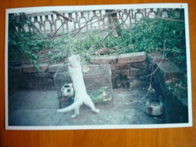
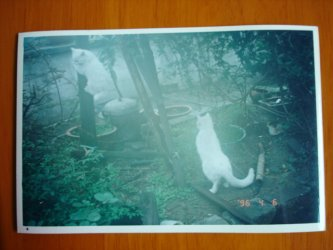

Sucha's Homepage ~ Animals
可爱的小动物
在家养小猫小狗是我的爱好，看到那些小动物们活蹦乱跳是最有趣的事情。只可惜现在搬到了新家，家人不准养了，怕搞脏地方。而且大部分的时间我都在学校，所以实际上都是家人在喂养它们。现在到了大学，那些期盼都成了空中楼阁了……
下面的一些照片都是在我未搬新家前拍的，扫描仪一下子很难找到，而恰好新年之际老爸买了 DC，于是……将就吧……
猫和老鼠
猫和老鼠大家都看过吧，虽说猫和老鼠势不两立，但是有些时候……

这是一只很有想象力的母猫……
母猫轶事
一些它的写真集，照片中一再出现的是从一楼蔓延到四楼顶的茂盛的紫薇。
小猫们
上面母猫的小猫崽们，出生地不详。我第一次看到它们是在我家四楼的杂物房里，因为窝一再被发现，它们搬了好多次家，我也在很多个夜深人静的夜晚目睹了母猫如何叼住小猫从楼梯上下……

“兔”~
这是一个被称为“兔”的狗，我“养”的第一只狗。因为对养狗缺乏经验，“兔”生了一场大病，从此没有再起来……真正的兔子我也养过，但是现在照片找不到了，即便找到也不会超过一张~
更多照片：小时候的"动物园"
家门前的鸟窝
05 年的春末夏初，正是南方的好时节，由于家人对住所周围环境的细心保护，引得一些小鸟前来筑巢，让家人好不兴奋。于是将这一幅幅画面拍下，记录这一窝小鸟的成长历程。
可惜好景不长，终于有一天，中午时分，老爸听到门外边吵吵嚷嚷，便出去看。没想到是一帮小孩子在捣蛋，把隐蔽得很好的鸟窝给捣碎了。
好在小鸟都已经长得差不多，似乎已经出去觅食，并没有被惊吓到。


更多照片：家门前的鸟窝
2004- ©
Sucha. Powered by MarkdownProjectCompositor.